Les 25 meilleurs restaurants de Paris en 2026
Paris compte 127 tables étoilées cette année, quatre de plus qu'en 2025, mais un trois-étoiles de moins. Voici les vingt-cinq adresses qui comptent, des palaces aux bistrots de quartier, avec ce qui a changé.

Paris concentre la plus forte densité de tables d'excellence en France, et le millésime 2026 le confirme : 127 restaurants étoilés, quatre de plus que l'an dernier. Ce palmarès présente vingt-cinq adresses, des trois-étoiles aux bistrots qui redéfinissent les codes, avec pour chacune ce qu'elle vaut, ce qu'elle coûte et à qui elle s'adresse.
L'essentielParis à table en 2026
- 127 restaurants étoilés, contre 123 en 2025 : 9 à trois étoiles, 20 à deux étoiles, 98 à une étoile.
- L'Ambroisie perd sa troisième étoile après le départ de Bernard Pacaud et la cession de la maison. Elle était trois-étoiles depuis 1988.
- Trois promotions en deuxième étoile : Hakuba, Alliance et Virtus.
- Le 8e arrondissement reste le cœur de la carte, avec 21 tables étoilées à lui seul, dont sept figurent dans cette sélection.
Notre méthode de sélection
Nous ne reproduisons pas les palmarès des guides : nous partons de leurs verdicts, vérifiés à la source, puis nous appliquons nos propres critères pour retenir vingt-cinq adresses et les ordonner. Cinq dimensions fondent chaque choix, et ce sont celles de notre grille de notation : la qualité et la créativité de la cuisine, le professionnalisme du service, le rapport entre l'expérience et le prix payé, le cadre et l'atmosphère, enfin la personnalité de la maison.
| Critère | Poids | Ce que nous regardons |
|---|---|---|
| Cuisine | 8 / 20 | Goût, technique, cohérence du menu, originalité |
| Produit et sourcing | 4 / 20 | Origine, saison, traçabilité, relation aux producteurs |
| Service et salle | 3 / 20 | Accueil, connaissance de la carte, rythme, discrétion |
| Cadre et atmosphère | 2 / 20 | Décor, acoustique, confort, lumière |
| Rapport qualité prix | 3 / 20 | Ce que l'addition achète réellement |
Nous excluons les maisons fermées, celles en transition de chef et celles dont la direction culinaire a changé sans que le résultat soit encore lisible. La sélection privilégie la diversité : gastronomie classique, cuisine créative, tables de chef, bistrots d'excellence, cuisine engagée et cuisines de métissage.
Les tarifs relevés sur le site officiel d'une maison sont signalés comme tels. Tous les autres sont présentés comme des ordres de grandeur, et restent à confirmer auprès de l'établissement avant de réserver.
Le palmarès : 25 tables parisiennes
-
01
Plénitude, Cheval Blanc Paris
Paris 1er · Gastronomie française
3 étoiles MichelinArnaud Donckele
L'hôtel Cheval Blanc occupe l'aile de la Samaritaine qui donne sur la Seine. Photo Arthur Weidmann, CC BY-SA 4.0, via Wikimedia Commons. Plénitude incarne la gastronomie française de très haut vol sous la direction d'Arnaud Donckele. Installée au cœur du palace Cheval Blanc, cette table respire l'élégance discrète : décor épuré, lumière tamisée, service d'une fluidité remarquable.
Donckele compose des assiettes d'une précision chirurgicale, où chaque élément raconte une histoire. Les produits sont d'une fraîcheur irréprochable, travaillés avec une technique sans faille, et les sauces sont la signature de la maison. L'expérience est immersive, presque méditative. Le seul reproche possible : le prix, vertigineux, qui en limite l'accès.
- Adresse8 quai du Louvre, Paris 1er
- CuisineGastronomie française
- Budget€€€€, ordre de grandeur 445 à 480 €
-
02
L'Ambroisie
Paris 4e · Gastronomie française classique
2 étoiles MichelinRétrogradée en 2026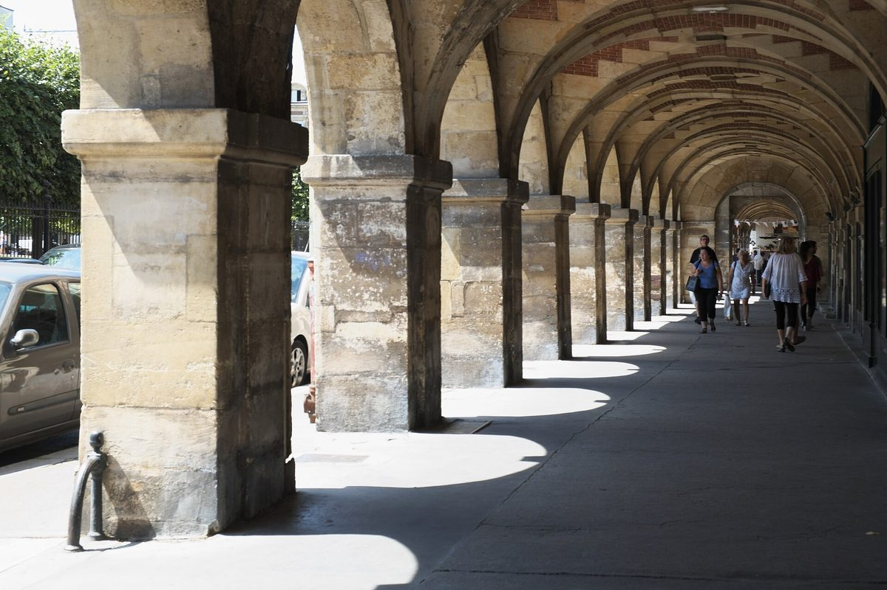
Les arcades de la place des Vosges, où la maison est installée depuis 1986. Photo GFreihalter, CC BY-SA 3.0, via Wikimedia Commons. Institution parisienne nichée sous les arcades de la place des Vosges, L'Ambroisie a longtemps été le plus ancien trois-étoiles de Paris, distingué sans interruption de 1988 à 2026. La cuisine y est classique, française, intemporelle : homard, truffes, sauces veloutées, technique irréprochable. L'atmosphère est solennelle, presque austère, avec ses boiseries sombres et son service en costume.
L'édition 2026 du Guide Michelin lui a retiré sa troisième étoile. Le guide explique que plus de la moitié des rétrogradations de l'année tiennent à un changement de chef ou de direction : Bernard Pacaud a quitté les cuisines fin juillet 2025, la maison a été cédée, et Shintaro Awa lui a succédé. La table reste l'une des grandes adresses classiques de la capitale, mais elle entre dans un nouveau chapitre.
Nous la maintenons à ce rang parce qu'une rétrogradation n'est pas une disparition, et parce que le lieu, la cave et l'école de cuisine qu'il représente comptent toujours dans le paysage parisien.
- Adresse9 place des Vosges, Paris 4e
- CuisineGastronomie française classique
- Budget€€€€, ordre de grandeur 280 à 320 €
-
03
Arpège
Paris 7e · Cuisine végétale et de saison
3 étoiles MichelinAlain Passard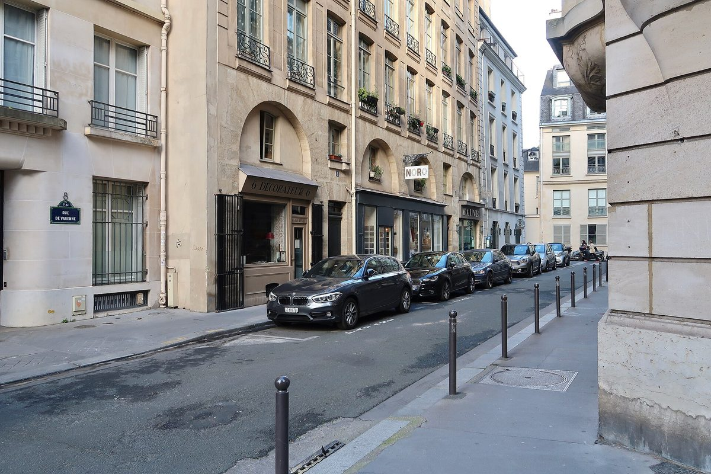
La rue de Varenne, où Alain Passard cuisine depuis 1986. Photo Celette, CC BY-SA 4.0, via Wikimedia Commons. Alain Passard a fait d'Arpège un sanctuaire de la cuisine végétale et de saison, sans jamais renier la gastronomie. Ses légumes, cultivés dans ses propres jardins, sont les vedettes : betteraves, carottes, champignons travaillés avec une poésie rare. Le décor est minimaliste, presque zen, murs clairs et lumière douce.
Le service est attentif sans être envahissant. Passard compose des menus où la nature prime, où chaque assiette respire la fraîcheur. C'est une cuisine engagée, sans être moralisatrice. Le prix reste élevé, justifié par la qualité des produits et la maîtrise technique. Arpège séduira les amateurs de cuisine créative et profondément respectueuse du produit.
- Adresse84 rue de Varenne, Paris 7e
- CuisineCuisine végétale et de saison
- Budget€€€€, ordre de grandeur 290 à 330 €
-
04
Le Cinq, Four Seasons George V
Paris 8e · Gastronomie française
3 étoiles MichelinChristian Le Squer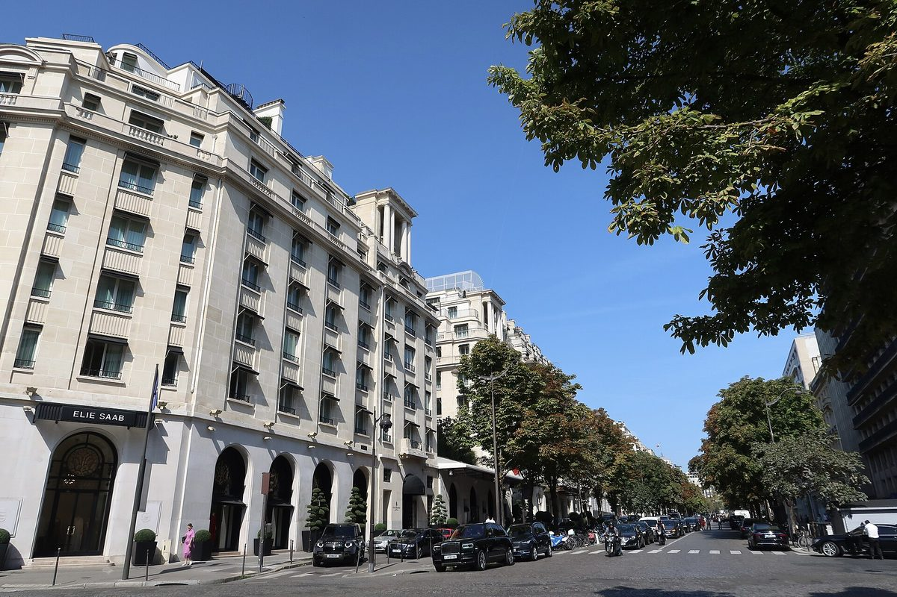
L'avenue George-V, où le palace abrite Le Cinq. Photo Polymagou, CC BY-SA 4.0, via Wikimedia Commons. Christian Le Squer dirige Le Cinq avec une main de maître, et compose une cuisine française raffinée, généreuse, sans ostentation. Le décor du palace respire le luxe discret : cristaux, dorures, lumière tamisée. Le service est impeccable, anticipant chaque besoin.
Les assiettes sont belles et savoureuses, avec une maîtrise remarquable des sauces et des cuissons. Le Squer privilégie les produits nobles, homard, foie gras, truffes, travaillés avec respect. L'expérience est confortable, rassurante, sans surprise déstabilisante. C'est une gastronomie de palace, classique, pour qui aime le confort et la certitude.
- Adresse31 avenue George-V, Paris 8e
- CuisineGastronomie française
- Budget€€€€, ordre de grandeur 300 à 350 €
-
05
Pierre Gagnaire
Paris 8e · Cuisine créative française
3 étoiles Michelin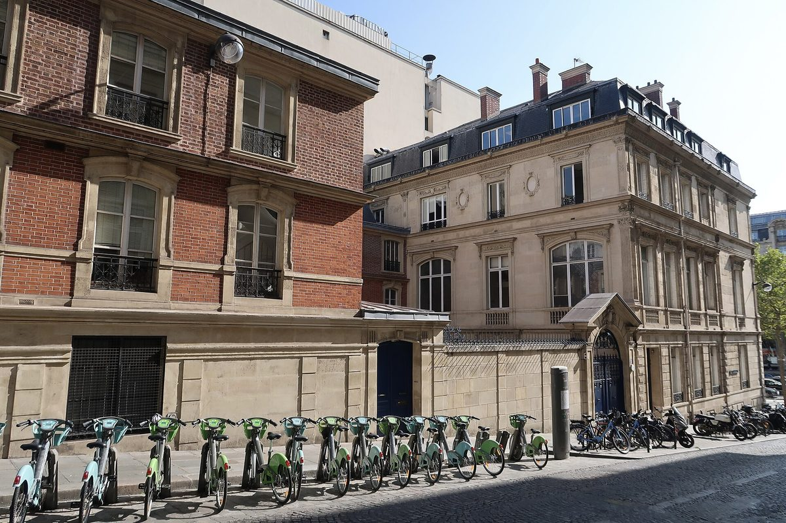
La rue Balzac, où le chef est installé depuis 1996. Photo Polymagou, CC BY-SA 4.0, via Wikimedia Commons. Pierre Gagnaire est un alchimiste, un créatif qui repousse les limites de la gastronomie depuis des décennies. Ses assiettes sont des compositions abstraites, colorées, surprenantes, où les saveurs dialoguent de manière inattendue. Le décor est contemporain, épuré, avec des touches artistiques.
Le service est cultivé, capable d'expliquer la philosophie derrière chaque plat. Gagnaire ne cherche pas à plaire à tout le monde, mais à émouvoir, à déranger, à faire réfléchir. Ses menus sont des voyages, parfois déroutants, toujours mémorables. Attention : cette cuisine n'est pas pour les amateurs de tradition, mais pour les aventuriers du palais.
- Adresse6 rue Balzac, Paris 8e
- CuisineCuisine créative française
- Budget€€€€, ordre de grandeur 280 à 320 €
-
06
Alléno Paris au Pavillon Ledoyen
Paris 8e · Gastronomie française
3 étoiles MichelinYannick Alléno
Le Pavillon Ledoyen, dans les jardins des Champs-Élysées. Photo Guilhem Vellut from Paris, France, CC BY 2.0, via Wikimedia Commons. Yannick Alléno a fait du Pavillon Ledoyen un temple de la gastronomie contemporaine. Le décor est spectaculaire, lumineux, avec de grandes baies vitrées sur les jardins des Champs-Élysées.
La cuisine d'Alléno est technique et généreuse, avec une maîtrise rare des cuissons et des associations. Il a développé une technique d'extraction à froid qui concentre les saveurs des sauces avec une intensité inhabituelle. Le service est professionnel, attentif, sans être étouffant. L'expérience est luxueuse sans être prétentieuse, et le prix, très élevé, reste cohérent avec le niveau.
- Adresse8 avenue Dutuit, Paris 8e
- CuisineGastronomie française
- Budget€€€€, ordre de grandeur 380 à 520 €
-
07
Épicure, Le Bristol
Paris 8e · Gastronomie française
3 étoiles MichelinArnaud Faye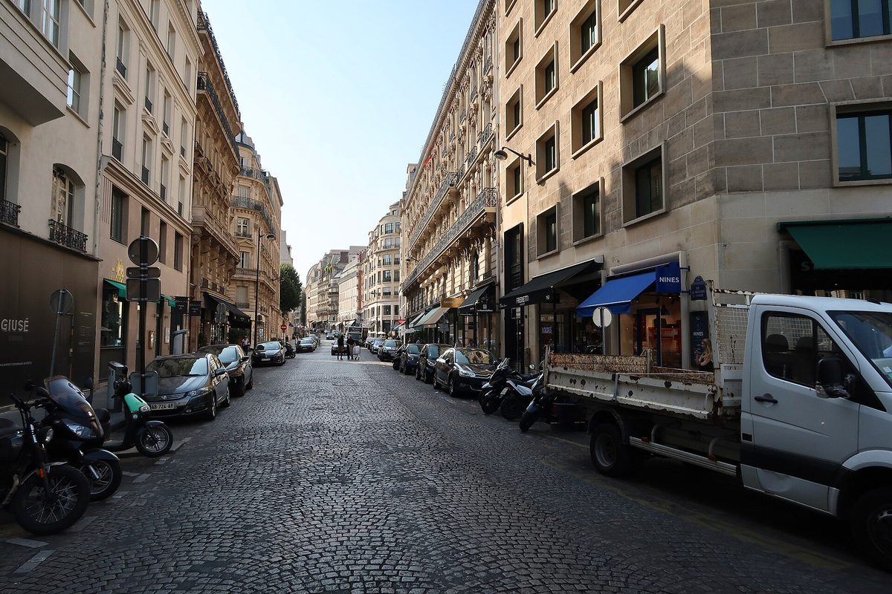
La rue du Faubourg-Saint-Honoré, où Le Bristol abrite Épicure. Photo Celette, CC BY-SA 4.0, via Wikimedia Commons. Arnaud Faye règne sur Épicure, la table gastronomique du Bristol, avec une élégance tranquille. Le décor est classique, raffiné, boiseries claires et lumière douce, avec une salle qui ouvre sur le jardin intérieur du palace.
La cuisine est française, généreuse, technique, sans esbroufe. Faye travaille les produits nobles avec respect et compose des assiettes équilibrées. Le service est impeccable. L'atmosphère est confortable, rassurante, pour qui aime le luxe discret. Épicure séduira les amateurs de gastronomie classique, élégante, sans surprise.
- Adresse112 rue du Faubourg-Saint-Honoré, Paris 8e
- CuisineGastronomie française
- Budget€€€€, ordre de grandeur 250 à 300 €
-
08
Le Pré Catelan
Paris 16e · Gastronomie française
3 étoiles MichelinFrédéric Anton
Le jardin du Pré-Catelan, qui entoure le pavillon Napoléon III. Photo Polymagou, CC BY-SA 4.0, via Wikimedia Commons. Frédéric Anton dirige Le Pré Catelan, niché au cœur du bois de Boulogne, depuis 1997. Le cadre est magique : pavillon Napoléon III, jardin, terrasse, lumière filtrée par les arbres.
La cuisine est française, généreuse, technique, avec une maîtrise remarquable des sauces et des cuissons. Anton travaille les produits nobles avec respect et compose des menus équilibrés. Le service est professionnel et attentif. L'atmosphère est romantique, idéale pour les occasions spéciales. Ce qui peut décevoir : une certaine froideur, qui peut manquer de spontanéité.
- AdresseRoute de Suresnes, bois de Boulogne, Paris 16e
- CuisineGastronomie française
- Budget€€€€, ordre de grandeur 240 à 340 €
-
09
Kei
Paris 1er · Dialogue franco-japonais
3 étoiles MichelinKei Kobayashi
La rue du Coq-Héron, où Kei Kobayashi est installé. Photo Chabe01, CC BY-SA 4.0, via Wikimedia Commons. Kei Kobayashi compose une cuisine franco-japonaise d'une finesse remarquable, dans un cadre minimaliste. Le décor est épuré, lumière douce, intimité.
La cuisine de Kei est technique, précise, respectueuse des produits. Il marie la délicatesse japonaise et la générosité française, et ses assiettes sont belles, harmonieuses, surprenantes. Le service est attentif, cultivé, capable d'expliquer chaque plat. L'atmosphère est calme, propice à la contemplation. Kei séduira les amateurs de précision et de voyage sensoriel.
- Adresse5 rue du Coq-Héron, Paris 1er
- CuisineFranco-japonaise
- OuvertureDu mardi au samedi, déjeuner les vendredi et samedi
- BudgetMenus non communiqués sur le site officiel
-
10
Le Clarence
Paris 8e · Gastronomie française
2 étoiles MichelinChristophe Pelé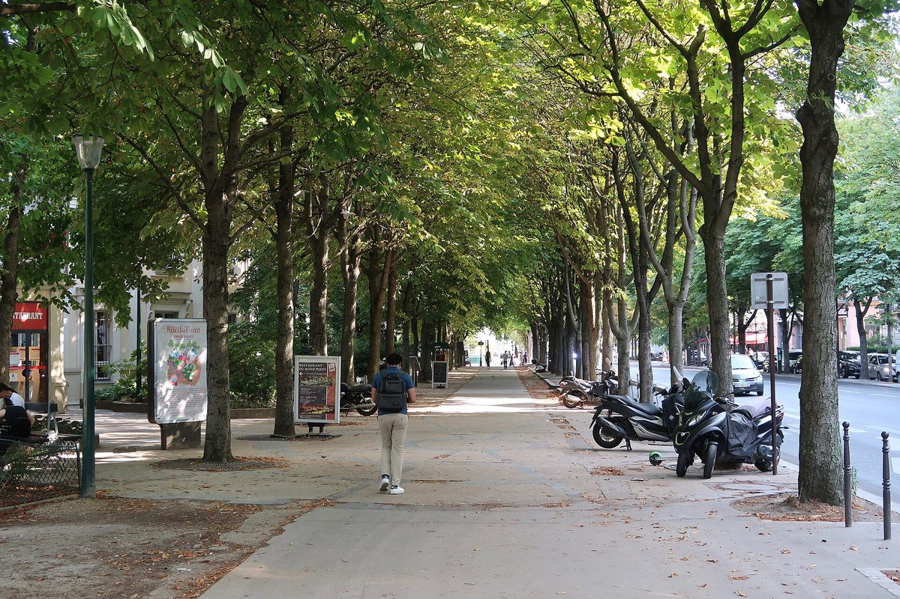
L'avenue Franklin-D.-Roosevelt, où Le Clarence occupe un hôtel particulier de 1884. Photo Celette, CC BY-SA 4.0, via Wikimedia Commons. Christophe Pelé dirige Le Clarence, installé dans un hôtel particulier de 1884 restauré par le prince Robert de Luxembourg, à la tête du Domaine Clarence Dillon. La maison a ouvert en novembre 2015 et détient deux étoiles depuis 2017.
Le décor est classique et raffiné, salons en enfilade, boiseries claires, lumière douce. La cuisine de Pelé fonctionne par associations libres et par séries de petites assiettes, avec une place centrale donnée au produit du jour et un accord mets et vins servi par une cave exceptionnelle. Le service est précis, anticipant chaque besoin. Le Clarence séduira les amateurs de gastronomie française élégante dans un cadre de maison particulière.
- Adresse31 avenue Franklin-D.-Roosevelt, Paris 8e
- CuisineGastronomie française
- Menus90 € au déjeuner, 190 € et 320 € en dégustation
- RelevéTarifs publiés par la maison
-
11
Table, Bruno Verjus
Paris 12e · Cuisine du produit
2 étoiles Michelin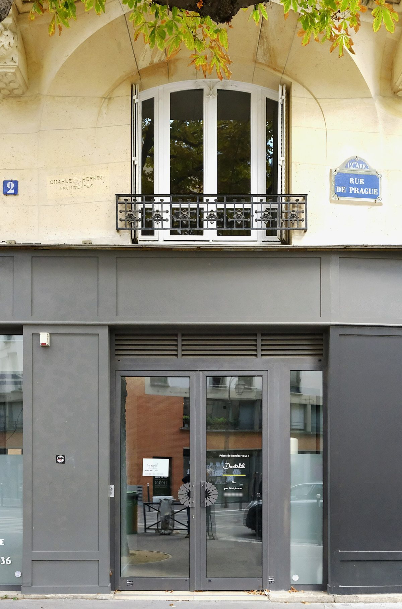
La rue de Prague, derrière le marché d'Aligre. Photo Mbzt, CC BY 4.0, via Wikimedia Commons. Bruno Verjus compose une cuisine d'exception fondée sur des produits bruts d'une qualité rare. Le décor est minimaliste, comptoir ouvert sur la cuisine, lumière naturelle. Ancien blogueur et chroniqueur devenu cuisinier sur le tard, il a ouvert Table avec Olivier Baussan et décroché sa deuxième étoile en février 2022.
La cuisine de Verjus est précise et respectueuse : il ne cherche pas à transformer, mais à révéler la matière première. Coquillages, poissons de ligne, légumes de petits producteurs, tout est sourcé à l'extrême. Le service est attentif et cultivé. Le rapport entre l'assiette et le prix est l'un des meilleurs de cette liste.
- Adresse3 rue de Prague, Paris 12e
- CuisineCuisine du produit
- OuvertureDu mardi au vendredi
- Budget€€€, ordre de grandeur 180 à 220 €
-
12
Le Gabriel, La Réserve
Paris 8e · Gastronomie française
3 étoiles MichelinJérôme Banctel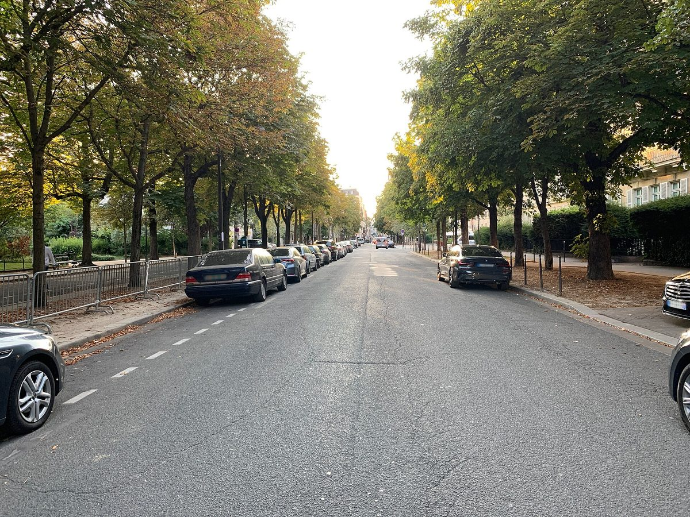
L'avenue Gabriel, où La Réserve abrite Le Gabriel. Photo Chabe01, CC BY-SA 4.0, via Wikimedia Commons. Jérôme Banctel dirige Le Gabriel, table gastronomique du palace La Réserve, distinguée de trois étoiles depuis 2023. Le décor est contemporain et élégant, lumière douce et grande intimité, avec une trentaine de couverts seulement.
La cuisine est française, technique, marquée par les voyages du chef en Asie : influences japonaises et bretonnes se croisent sans jamais se contredire. Banctel travaille les produits nobles avec respect et compose des menus équilibrés. Le service est professionnel, attentif, sans être étouffant. L'atmosphère est luxueuse, idéale pour les occasions spéciales.
- Adresse42 avenue Gabriel, Paris 8e
- CuisineGastronomie française
- Budget€€€€, ordre de grandeur 190 à 240 €
-
13
Blanc, Shinichi Sato
Paris 16e · Franco-japonaise
2 étoiles MichelinArchitecture Kengo Kuma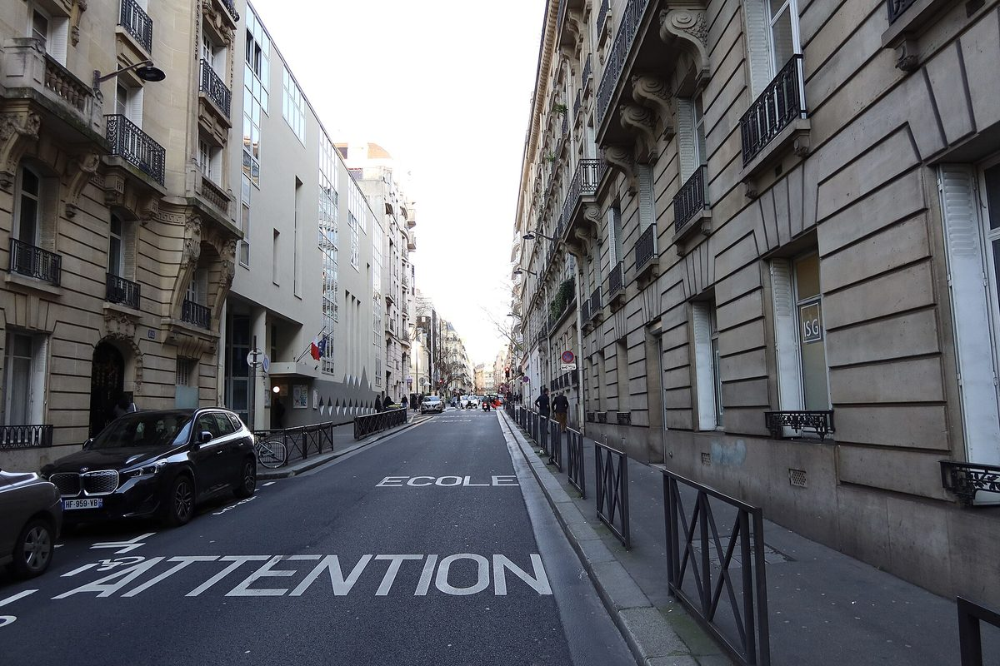
La rue de Longchamp, où Blanc a ouvert en septembre 2023. Photo Polymagou, CC BY-SA 4.0, via Wikimedia Commons. Shinichi Sato, longtemps chef de Passage 53, a ouvert Blanc en septembre 2023 sur l'ancien site du restaurant d'Henri Faugeron. La deuxième étoile est venue en mars 2025. Le lieu, dessiné par l'architecte japonais Kengo Kuma, est un écrin de bois clair et de lumière, minimaliste sans être froid.
La cuisine de Sato est technique, précise, respectueuse des produits. Il marie les saveurs japonaises et l'influence française et compose des assiettes harmonieuses et surprenantes. Le service est attentif et cultivé. L'atmosphère est calme, propice à la contemplation, et le rapport qualité prix est excellent pour ce niveau.
- Adresse52 rue de Longchamp, Paris 16e
- CuisineFranco-japonaise
- Téléphone01 70 60 12 00
- Budget€€€, ordre de grandeur 170 à 210 €
-
14
Le Grand Restaurant, Jean-François Piège
Paris 8e · Gastronomie française
2 étoiles Michelin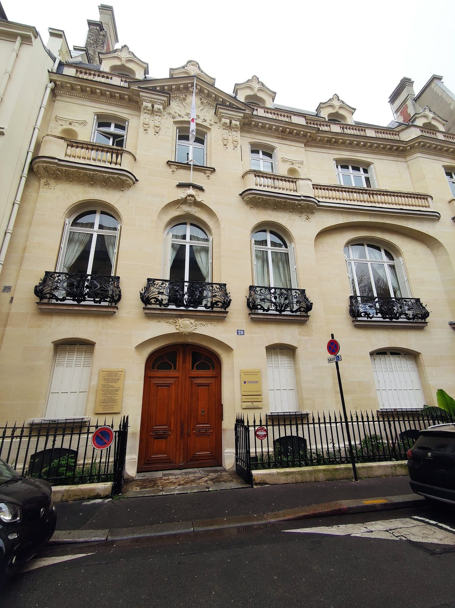
La rue d'Aguesseau, où Jean-François Piège s'est installé en 2015. Photo CVB, CC BY-SA 4.0, via Wikimedia Commons. Jean-François Piège dirige Le Grand Restaurant avec une vision claire : une gastronomie de haute technique dans une salle minuscule, une trentaine de couverts sous un plafond sculptural en verre. Il n'y a pas de carte, mais un menu dégustation qui parcourt les régions de France autour de ce que le chef appelle ses mijotés modernes.
La cuisine est française, technique, avec une maîtrise remarquable des cuissons. Le ris de veau cuit sur des coques de noix est devenu une signature. Le service est professionnel et attentif, l'atmosphère confortable. Le rapport qualité prix est bon pour ce niveau de cuisine.
- Adresse7 rue d'Aguesseau, Paris 8e
- CuisineGastronomie française
- Budget€€€, ordre de grandeur 150 à 190 €
-
15
Hakuba, Cheval Blanc Paris
Paris 1er · Cuisine japonaise
2 étoiles Michelin 2026Promotion de l'annéeTakuya Watanabe a décroché une deuxième étoile dans l'édition 2026 avec Hakuba, la table japonaise du Cheval Blanc, aux côtés d'Alliance et de Virtus. Gault&Millau lui a par ailleurs attribué quatre toques la même année.
Le décor est minimaliste, comptoir en bois clair, lumière douce, une poignée de couverts seulement. La cuisine de Watanabe est technique et précise : sushis et kaiseki travaillés avec des produits français, dans une lecture japonaise stricte. Le service est attentif et cultivé, capable d'expliquer chaque bouchée. Hakuba séduira les amateurs de cuisine japonaise authentique et de précision.
- AdresseCheval Blanc, 8 quai du Louvre, Paris 1er
- CuisineJaponaise
- Budget€€€€, ordre de grandeur 180 à 220 €
-
16
Maison Rostang
Paris 17e · Gastronomie française
2 étoiles MichelinNicolas Beaumann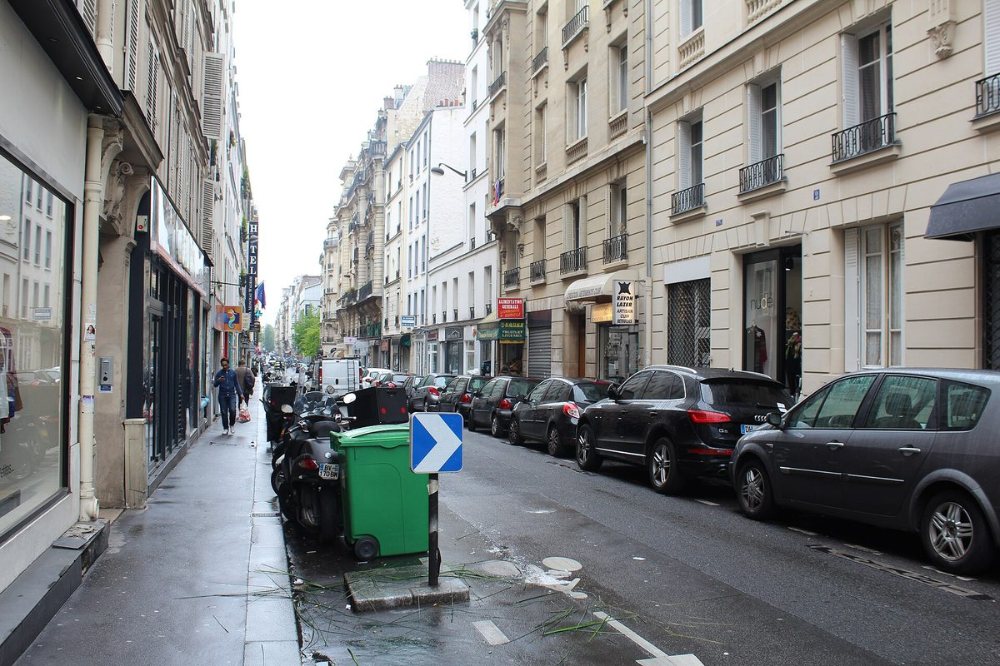
La rue Rennequin, où la maison est installée depuis 1978. Photo Chabe01, CC BY-SA 4.0, via Wikimedia Commons. Nicolas Beaumann dirige les cuisines de Maison Rostang, institution parisienne fondée par Michel Rostang. Le décor est un cabinet de curiosités : boiseries, collections d'art, salle Lalique, une atmosphère qui n'existe nulle part ailleurs à Paris.
La cuisine est française, généreuse, technique, avec une maîtrise remarquable des sauces. Beaumann travaille les produits nobles avec respect et compose des menus équilibrés. Le service est professionnel, attentif, sans être étouffant. L'atmosphère est confortable, pour qui aime la tradition assumée.
- Adresse20 rue Rennequin, Paris 17e
- CuisineGastronomie française
- Budget€€€, ordre de grandeur 160 à 200 €
-
17
L'Oiseau Blanc, The Peninsula
Paris 16e · Gastronomie française
2 étoiles MichelinDavid Bizet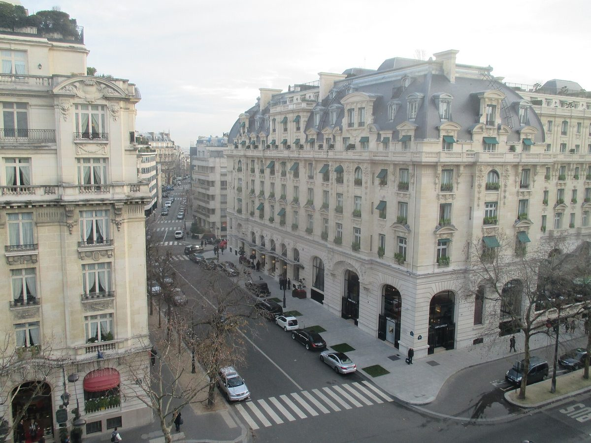
The Peninsula Paris, avenue Kléber, dont le toit porte L'Oiseau Blanc. Photo Thomon, CC BY-SA 4.0, via Wikimedia Commons. David Bizet dirige L'Oiseau Blanc, perché sur le toit du Peninsula, deux étoiles depuis 2022. Le restaurant porte le nom de l'avion de Nungesser et Coli, dont une réplique grandeur nature est fixée au sommet de l'hôtel. Le décor est contemporain et vitré, avec une terrasse qui donne sur la tour Eiffel et le Sacré-Cœur.
La cuisine est française, technique, généreuse, élaborée à partir de produits de saison. Les jus et les sauces sont d'une grande justesse, et la présentation est soignée sans être maniérée. Le service est professionnel et attentif. La vue en fait l'une des adresses les plus demandées de la capitale pour les grandes occasions.
- Adresse19 avenue Kléber, Paris 16e
- CuisineGastronomie française
- Budget€€€€, ordre de grandeur 180 à 220 €
-
18
Mantra
Paris 9e · Franco-malaisienne
Table à suivre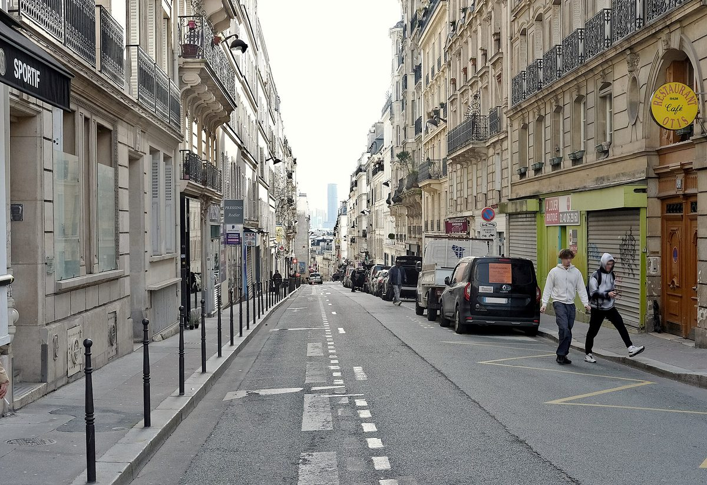
La rue Rodier, où Mantra a ouvert à l'automne 2025. Photo Mbzt, CC BY 4.0, via Wikimedia Commons. Jonathan Caron et Manogeran Shasitharan, dit Jack, signent une cuisine franco-malaisienne d'une originalité remarquable. Le duo, qui tenait L'Itinérance à Mers-les-Bains, est revenu à Paris à l'automne 2025 et s'est installé rue Rodier, dans le 9e.
Dix-huit couverts, une salle tamisée, une cuisine ouverte face au comptoir : le format est intime et le service se fait au plus près. La cuisine est technique et créative, mariant la haute gastronomie française et des influences malaisiennes franches, épices, herbes, fermentations. Le rapport qualité prix est excellent pour ce niveau de créativité, et c'est l'une des tables à suivre de près cette année.
- AdresseRue Rodier, Paris 9e
- CuisineFranco-malaisienne
- Salle18 couverts
- Budget€€€, ordre de grandeur 120 à 160 €
-
19
Erso
Paris 11e · Bistrot français
Meilleur bistrot de Paris, Lebey 2025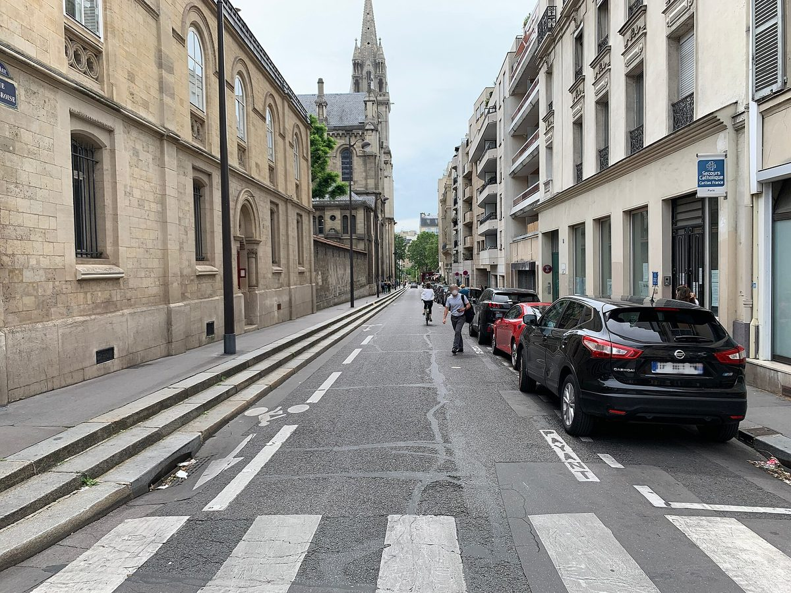
La rue Saint-Ambroise, où Erso a ouvert en août 2024. Photo Chabe01, CC BY-SA 4.0, via Wikimedia Commons. Yann Placet en cuisine et Marine Bert en salle, deux anciens de Pantruche, ont ouvert Erso en août 2024. Sept mois plus tard, le guide Lebey le sacrait meilleur bistrot de Paris de l'année. Le décor est bistrotier et chaleureux, une salle courte, un comptoir, une ardoise.
La cuisine est française, néoclassique, généreuse et technique, sans esbroufe. Placet travaille des produits de qualité et compose une carte courte qui bouge souvent. Le service est attentif sans cérémonie. L'atmosphère est conviviale, propice aux repas entre amis, et le rapport qualité prix est le meilleur de cette liste.
- Adresse18 rue Saint-Ambroise, Paris 11e
- CuisineBistrot français
- Budget€€, ordre de grandeur 80 à 120 €
-
20
Les Résistants
Paris 10e · Cuisine engagée, circuit court
150 fermes partenaires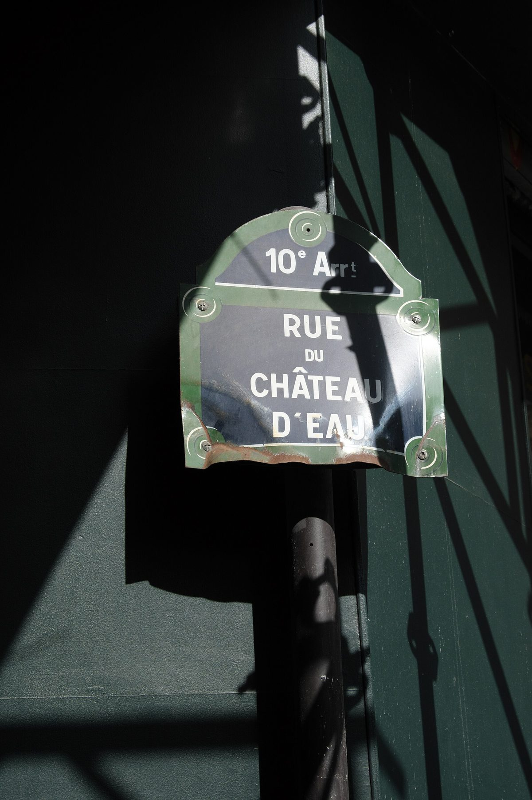
La rue du Château-d'Eau, où Les Résistants sont installés depuis 2017. Photo GFreihalter, CC BY-SA 4.0, via Wikimedia Commons. Les Résistants défendent depuis 2017 une cuisine engagée, en circuit court, adossée à un réseau de cent cinquante fermes partenaires. La totalité des produits servis vient de ce réseau, et la maison publie ses producteurs.
Le décor est contemporain et épuré. La cuisine est française, généreuse, sans esbroufe, avec une carte qui change au rythme des saisons et des livraisons. Le service est attentif et capable d'expliquer les choix de sourcing sans faire la leçon. L'atmosphère est conviviale, et le rapport qualité prix excellent pour le niveau d'exigence sur la matière première.
- Adresse16 rue du Château-d'Eau, Paris 10e
- CuisineCuisine engagée, circuit court
- Budget€€, ordre de grandeur 70 à 100 €
-
21
Bombance
Paris 4e · Bistronomie de saison
Vins nature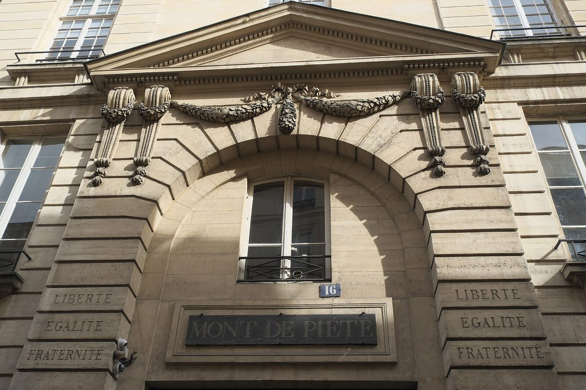
La rue des Blancs-Manteaux, au cœur du Marais. Photo GFreihalter, CC BY-SA 3.0, via Wikimedia Commons. Magali Martini défend chez Bombance une bistronomie sincère et de saison, sourcée auprès de petits producteurs. La carte est courte et renouvelée chaque mois autour des maraîchers d'Île-de-France, de la pêche durable, de viandes françaises élevées en plein air et de fromages affinés à Paris.
Le décor est contemporain et chaleureux, avec quelques touches bohèmes. La cave fait la part belle aux vignerons en bio et en biodynamie, et le service sait conseiller sans jargon. L'atmosphère est conviviale, propice aux repas entre amis, et le rapport qualité prix est très bon.
- Adresse40 rue des Blancs-Manteaux, Paris 4e
- CuisineBistronomie de saison, vins nature
- OuvertureDu mardi au samedi
- Budget€€, ordre de grandeur 60 à 90 €
-
22
Aldehyde
Paris 4e · Française et tunisienne
1 étoile MichelinYoussef Marzouk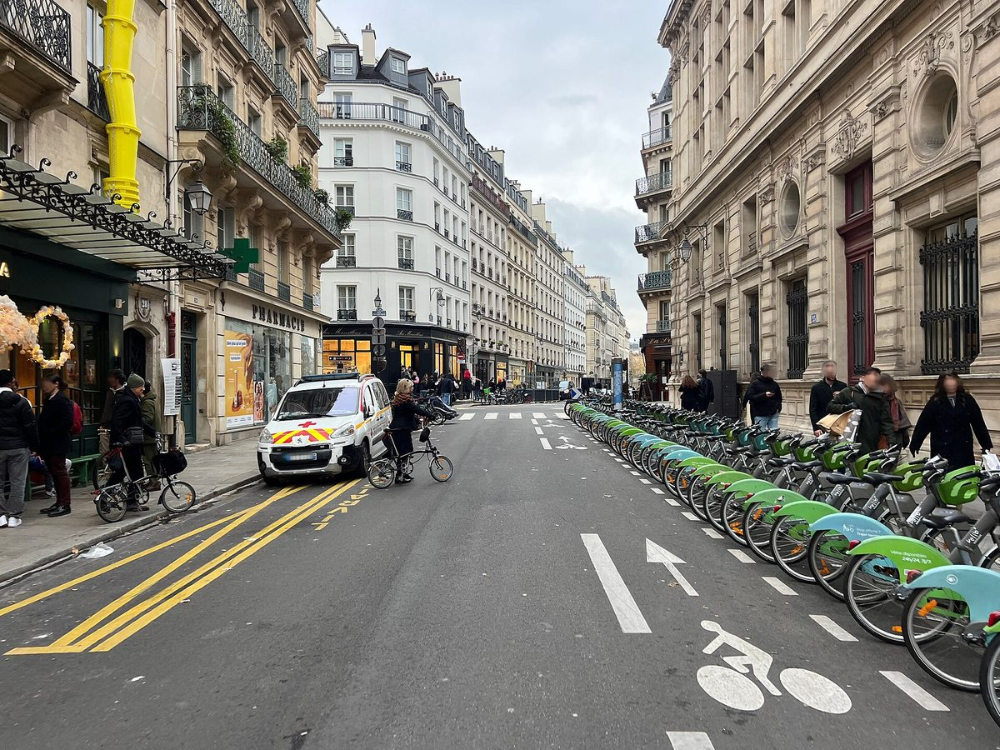
La rue du Pont-Louis-Philippe, où Aldehyde est installé. Photo Chabe01, CC BY-SA 4.0, via Wikimedia Commons. Le chef tunisien Youssef Marzouk a décroché sa première étoile en mars 2025 avec Aldehyde, dans le Marais. Le décor est minimaliste et contemporain, avec une cuisine ouverte sur un comptoir où le chef travaille sous les yeux des convives.
La cuisine est française de technique et tunisienne de sensibilité : épices, herbes, agrumes, avec un menu unique servi en surprise. Les assiettes sont harmonieuses, précises, et l'ensemble est d'une belle cohérence. Le service est attentif et cultivé. C'est aussi l'un des étoilés les plus accessibles de Paris, avec une formule à 35 € au déjeuner.
- Adresse5 rue du Pont-Louis-Philippe, Paris 4e
- CuisineFrançaise et tunisienne
- MenusDéjeuner 35 € et 45 €, dîner 95 € et 120 €
- RelevéTarifs publiés par la maison
-
23
Amâlia
Paris 11e · Italo-française
1 étoile Michelin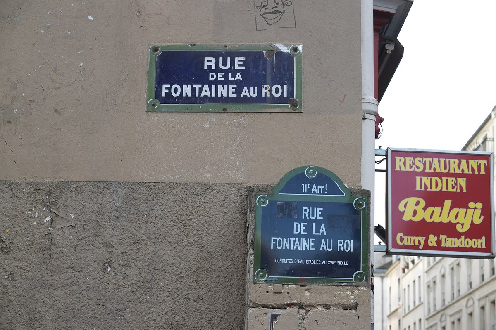
La rue de la Fontaine-au-Roi, où Amâlia a ouvert en mars 2024. Photo GFreihalter, CC BY-SA 3.0, via Wikimedia Commons. Amâlia est né de la rencontre de deux chefs italiens, Eugenio Anfuso en cuisine et Cecilia Spurio en salle et en pâtisserie. La maison a ouvert en mars 2024 et décroché sa première étoile un an plus tard, en mars 2025.
Le décor est contemporain et chaleureux, format bistrot de quartier avec un niveau d'exigence de table gastronomique. La cuisine est une relecture moderne et surprenante des classiques français, traversée par une sensibilité italienne dans les pâtes et les desserts. Le service est attentif, l'atmosphère conviviale, et le rapport qualité prix est l'un des meilleurs parmi les étoilés parisiens.
- Adresse32 rue de la Fontaine-au-Roi, Paris 11e
- CuisineItalo-française
- Budget€€€, ordre de grandeur 120 à 160 €
-
24
Vaisseau
Paris 11e · Cuisine française créative
1 étoile MichelinAdrien Cachot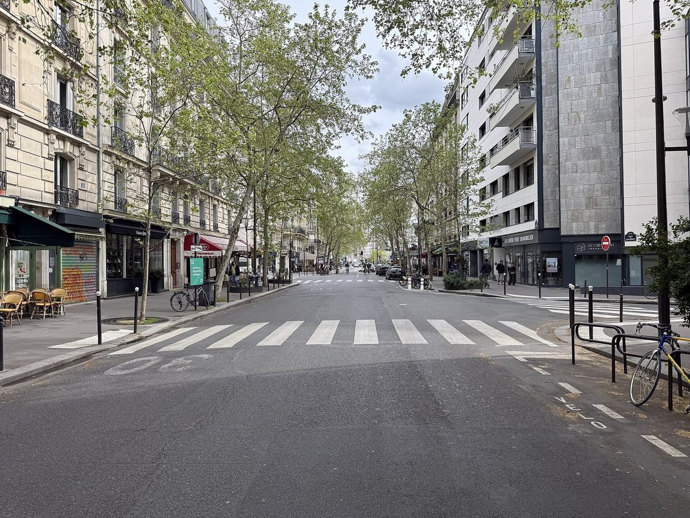
La rue Faidherbe, où Adrien Cachot a ouvert Vaisseau en 2023. Photo Chabe01, CC BY-SA 4.0, via Wikimedia Commons. Adrien Cachot, révélé au grand public par Top Chef, a ouvert Vaisseau fin septembre 2023 rue Faidherbe. La première étoile est arrivée en mars 2025. Le décor est brut et contemporain, avec un comptoir et une cuisine à vue.
La cuisine est un laboratoire : abats, produits oubliés, associations tranchantes, une signature qui assume le déséquilibre plutôt que le consensus. Ce n'est pas une cuisine facile, et c'est précisément ce qui la rend intéressante. Le service est attentif et pédagogue. Vaisseau séduira les curieux qui préfèrent être bousculés plutôt que rassurés.
- Adresse35 rue Faidherbe, Paris 11e
- CuisineCuisine française créative
- Budget€€€, ordre de grandeur 110 à 150 €
-
25
Agapé
Paris 17e · Cuisine moderne
1 étoile MichelinYoshi Nagato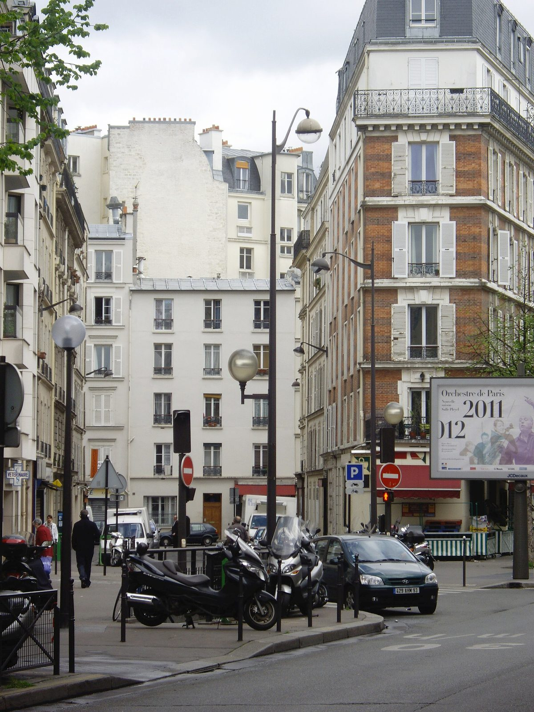
Le quartier de la rue Jouffroy-d'Abbans, dans le 17e. Photo Wikimedia Commons / Mu, CC BY-SA 3.0, via Wikimedia Commons. Agapé est tenu par Yoshi Nagato, passé par Maison Rostang, Le Cinq et Épicure, accompagné d'Asuka Ishiba aux desserts. La maison tient son étoile avec une régularité tranquille, loin des projecteurs.
Le décor est contemporain et feutré, une salle confortable et bien espacée dans un quartier résidentiel. La cuisine est moderne, bâtie sur des produits de premier choix et des cuissons très maîtrisées. Le service est attentif et l'atmosphère conviviale. Agapé séduira ceux qui cherchent une grande table sans le cérémonial des palaces.
- Adresse51 rue Jouffroy-d'Abbans, Paris 17e
- CuisineCuisine moderne
- OuvertureDu lundi au vendredi
- Téléphone01 42 27 20 18
- Budget€€€, ordre de grandeur 100 à 140 €


Ce que dit la carte parisienne de 2026
Le recensement des mouvements de l'année, arrondissement par arrondissement, donne une image assez nette de la géographie gastronomique de la capitale. Le 8e reste massivement dominant, avec vingt et une tables étoilées à lui seul, soit un sixième du total parisien. Mais la dynamique n'est plus là : elle est dans le 11e, dans le 10e et dans le 9e, où les ouvertures de ces trois dernières années ont produit l'essentiel des nouvelles étoiles et des tables dont on parle.
| Arrondissement | Tables | Lesquelles |
|---|---|---|
| 1er arrondissement | 3 | Plénitude, Kei, Hakuba |
| 4e arrondissement | 3 | L'Ambroisie, Bombance, Aldehyde |
| 7e arrondissement | 1 | Arpège |
| 8e arrondissement | 7 | Le Cinq, Pierre Gagnaire, Alléno Paris au Pavillon Ledoyen, Épicure, Le Clarence, Le Gabriel, Le Grand Restaurant |
| 9e arrondissement | 1 | Mantra |
| 10e arrondissement | 1 | Les Résistants |
| 11e arrondissement | 3 | Erso, Amâlia, Vaisseau |
| 12e arrondissement | 1 | Table |
| 16e arrondissement | 3 | Le Pré Catelan, Blanc, L'Oiseau Blanc |
| 17e arrondissement | 2 | Maison Rostang, Agapé |
| Type de cuisine | Tables | Part |
|---|---|---|
| Gastronomie française | 10 | 40 % |
| Bistronomie de saison | 1 | 4 % |
| Bistrot français | 1 | 4 % |
| Cuisine créative française | 1 | 4 % |
| Cuisine du produit | 1 | 4 % |
| Cuisine engagée, circuit court | 1 | 4 % |
| Cuisine française créative | 1 | 4 % |
| Cuisine japonaise | 1 | 4 % |
| Cuisine moderne | 1 | 4 % |
| Cuisine végétale et de saison | 1 | 4 % |
| Dialogue franco-japonais | 1 | 4 % |
| Franco-japonaise | 1 | 4 % |
| Franco-malaisienne | 1 | 4 % |
| Française et tunisienne | 1 | 4 % |
| Gastronomie française classique | 1 | 4 % |
| Italo-française | 1 | 4 % |
| Fourchette | Tables | Part |
|---|---|---|
| €€€€ | 11 | 44 % |
| €€€ | 8 | 32 % |
| €€ | 3 | 12 % |
| €€€ ou moins | 2 | 8 % |
| non communiqué | 1 | 4 % |
Trois enseignements. Le premier : la gastronomie française classique domine toujours, mais les tables de métissage, franco-japonaise, italo-française, franco-malaisienne, tunisienne, occupent désormais un tiers de cette sélection. Le deuxième : les maisons les plus intéressantes de l'année sont aussi les moins chères, Erso, Aldehyde, Amâlia et Bombance servant toutes sous 160 €. Le troisième : la promotion 2026 récompense des tables ouvertes en 2023 et 2024, ce qui raccourcit nettement le délai entre l'ouverture et la reconnaissance.
Ce qui a changé en 2026
La rétrogradation de L'Ambroisie est l'événement de l'année à Paris. La maison de la place des Vosges était le plus ancien trois-étoiles de la capitale, distingué sans interruption depuis 1988. Bernard Pacaud a quitté les cuisines fin juillet 2025, la maison a été cédée, et Shintaro Awa lui a succédé. Le guide indique que plus de la moitié des rétrogradations de l'édition s'expliquent par un changement de chef ou de direction.
Trois maisons montent en deuxième étoile : Hakuba, la table japonaise du Cheval Blanc ; Alliance, rue de Poissy, ouverte en 2015 ; et Virtus, dans le 12e. Onze tables décrochent une première étoile, dont Jin, Maison Ruggieri Palais Royal, HANADA et Prévelle, la maison de Romain Meder ouverte en avril 2025, qui figure dans notre palmarès national.
Cinq maisons étoilées ont disparu de la sélection parisienne : Yam'Tcha, Dame de Pic, Hémicycle, L'Écrin et Le Chiberta. Un rappel utile : une étoile n'est jamais acquise, et une adresse recopiée d'un classement de l'an dernier peut renvoyer à un rideau baissé.
Questions fréquentes
Quels sont les restaurants 3 étoiles Michelin à Paris en 2026 ?
Paris compte neuf tables à trois étoiles dans l'édition 2026, une de moins qu'en 2025 : Plénitude au Cheval Blanc (1er), Kei (1er), Arpège (7e), Le Cinq au Four Seasons George V (8e), Pierre Gagnaire (8e), Alléno Paris au Pavillon Ledoyen (8e), Épicure au Bristol (8e), Le Gabriel à La Réserve (8e) et Le Pré Catelan (16e). L'Ambroisie, qui figurait dans cette liste depuis 1988, a été rétrogradée à deux étoiles.
Quel est le meilleur restaurant de Paris en 2026 ?
En tête de notre palmarès : Plénitude, au Cheval Blanc Paris, dirigé par Arnaud Donckele. Trois étoiles Michelin, une cuisine de la sauce et de l'émotion, un service d'une fluidité rare et un décor signé Peter Marino. C'est aussi l'une des additions les plus élevées de la capitale. Pour un rapport entre l'assiette et le prix nettement plus favorable, Table de Bruno Verjus, Aldehyde ou Amâlia sont de meilleurs choix.
Quelles tables parisiennes ont été promues ou rétrogradées en 2026 ?
Une rétrogradation majeure : L'Ambroisie, place des Vosges, passe de trois à deux étoiles après le départ de Bernard Pacaud en juillet 2025 et la reprise de la maison. Trois promotions en deuxième étoile : Hakuba au Cheval Blanc, Alliance dans le 5e et Virtus dans le 12e. Onze tables décrochent une première étoile, parmi lesquelles Jin, Maison Ruggieri Palais Royal, HANADA et Prévelle. Cinq maisons étoilées ont fermé : Yam'Tcha, Dame de Pic, Hémicycle, L'Écrin et Le Chiberta.
Quel restaurant choisir pour un dîner romantique à Paris ?
Trois adresses de cette liste s'y prêtent particulièrement. Le Pré Catelan, pour son pavillon Napoléon III au cœur du bois de Boulogne, sans doute le plus beau cadre de la capitale. L'Oiseau Blanc, sur le toit du Peninsula, pour sa terrasse vitrée face à la tour Eiffel. Et Le Gabriel, à La Réserve, pour son intimité : une trentaine de couverts seulement, dans un salon feutré.
Quels sont les meilleurs bistrots et tables de quartier de Paris ?
Erso, dans le 11e, sacré meilleur bistrot de Paris par le guide Lebey en 2025, ouvert par Yann Placet et Marine Bert, autour de 80 à 120 €. Bombance, dans le Marais, où Magali Martini signe une bistronomie de saison accompagnée de vins nature, autour de 60 à 90 €. Les Résistants, dans le 10e, qui sourcent la totalité de leur carte auprès de cent cinquante fermes partenaires, autour de 70 à 100 €.
Quel budget prévoir pour un grand restaurant parisien ?
L'écart est considérable au sein de cette sélection. Les trois-étoiles se situent le plus souvent entre 250 et 500 € par personne pour un menu dégustation. Les deux-étoiles descendent autour de 150 à 250 €. Les une-étoile de cette liste tournent entre 100 et 160 €, et Aldehyde propose une formule à 35 € au déjeuner, l'une des plus accessibles de Paris pour une table étoilée. Les bistrots se situent entre 60 et 120 €.
Comment ce palmarès est-il établi ?
Il croise les distinctions publiées, Guide Michelin 2026 en premier lieu, avec nos propres critères éditoriaux, détaillés sur notre page méthode. Chaque adresse, chaque distinction et chaque tarif cité a été recoupé à la source avant publication. Les tarifs relevés sur le site officiel d'une maison sont signalés comme tels ; les autres sont donnés comme ordres de grandeur.
Sources
Les distinctions, adresses et tarifs cités ont été relevés sur les pages ci-dessous et sur les sites officiels des maisons concernées, le 31 août 2026.
- Guide Michelin France 2026, la liste complète des étoiles.
- Affiches Parisiennes, les 127 étoilés de Paris, répartition et mouvements 2026.
- Sortir à Paris, L'Ambroisie perd sa troisième étoile.
- CNews, Erso meilleur bistrot de Paris selon le guide Lebey 2025.
- Le Clarence, Agapé, Bombance, Les Résistants et Table, adresses, horaires et tarifs relevés sur leurs sites officiels.
Une adresse qui a changé, un chef qui est parti, un tarif à jour, une distinction oubliée : signalez-le nous. Les corrections sont datées sur la page, et reportées sur toutes les pages concernées.
Aller plus loin
Pour la matinée plutôt que le service du soir, notre guide du meilleur brunch à Paris réunit douze adresses vérifiées, du buffet de Montmartre au salon de thé anglais de la rue des Martyrs.
Pour la table populaire plutôt que la table étoilée, et hors de Paris, notre guide des 10 meilleurs bouchons lyonnais détaille ce que valent les labels lyonnais.
Ce palmarès parisien s'inscrit dans un travail plus large. Le même exercice à l'échelle du pays donne les 15 meilleurs restaurants de France en 2026, où quatre des maisons citées ici figurent également. Pour comprendre comment nous jugeons, la page notre méthode détaille la grille sur 20 et son échelle. Et la rédaction présente les trois signatures du média.
Aucune des maisons citées dans cet article n'a été visitée par la rédaction à ce jour. Les notes sur 20 de notre grille viendront avec nos visites.